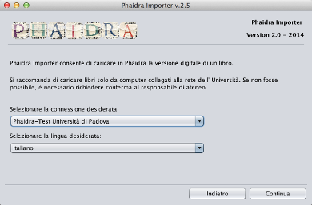

Interfaccia Utente
- All'avvio dell’applicazione vengono rilevati i server e le lingue disponibili e viene visualizzata la seguente finestra.

- Mediante tale è possibile scegliere una destinazione (un server) e la lingua desiderata per l'esecuzione dell'applicazione.
L'applicazione potrebbe non riconoscere il certificato del server selezionato, in questo caso comparirà un'ulteriore finestra con la richiesta di conferma per l'acquisizione del certificato.
- In caso di conferma l'applicazione acquisirà il certificato e lo aggiungerà alla lista dei certificati riconosciuti. Al termine della procedura l'applicazione verrà riavviata.